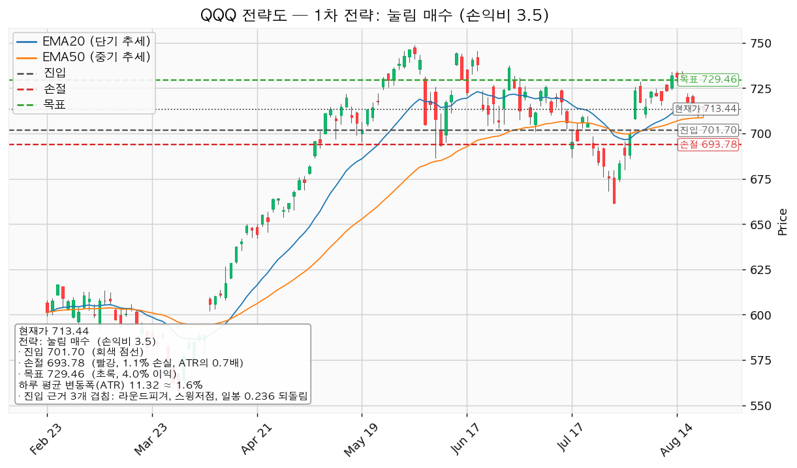
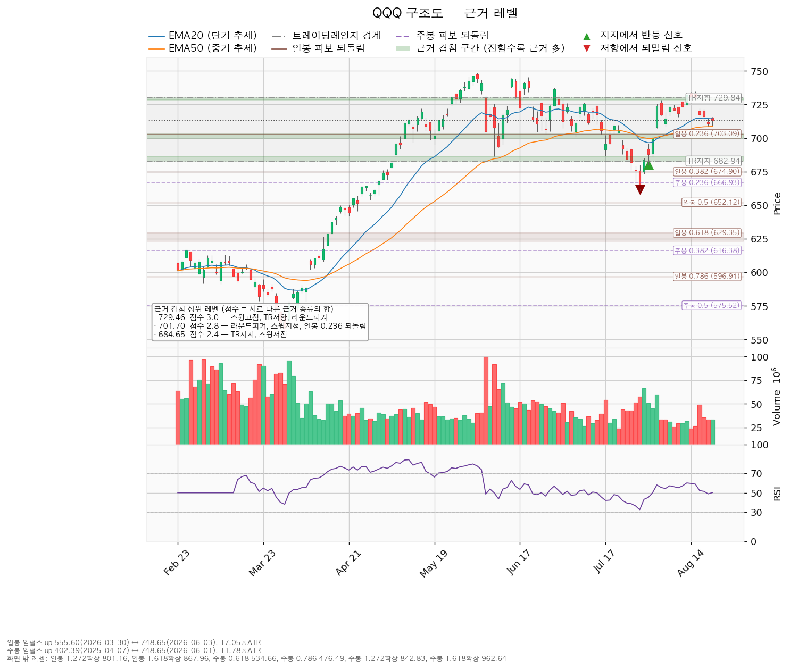

| 항목 | 값 |
|---|---|
| 현재가(최근 종가) | 713.44 |
| EMA20 (20일 지수이동평균, 단기 추세선) | 714.42 |
| EMA50 (50일 지수이동평균, 중기 추세선) | 708.71 |
| RSI(14) (0~100 과열·침체 지표, 50이 중립) | 50.15 |
| ATR (하루 평균 변동폭) | 11.32 (약 1.6%) |
| 트레이딩레인지(가격이 갇혀 있는 박스 구간) | 지지 682.94 / 저항 729.84 · `is_valid_range=true`(유효한 박스로 판정) — 박스 안에 머문 비율 82.5%, 폭은 하루 변동폭의 4.14배 |
| 국면 후보(Wyckoff 분석) | accumulation = 매집 국면(큰손이 조용히 물량을 모으는 구간) — 엔진 근거: "flat range, undecided bias"(평평한 박스, 방향 미결정) |
| 감지된 신호 | spring(박스 아래로 잠깐 빠졌다가 되올라오는 반등 신호) 682.48(7/24)·673.30(7/30)·680.05(7/31), sow(지지선이 힘없이 밀리는 약세 신호) 675.49(7/28)·661.73(7/29) |
| 일봉 피보나치(직전 상승분의 되돌림 비율 레벨) | `ok=true`(유효) · 기준 상승 구간 555.60(2026-03-30) → 748.65(2026-06-03), 하루 변동폭의 17.05배 |
| 주봉 피보나치 | `ok=true`(유효) · 기준 상승 구간 402.39(2025-04-07) → 748.65(2026-06-01), 하루 변동폭의 11.78배 |
| 엔진 국면 판정 | `regime` = 상승(매수 우호), `trend` = up(상승 추세) |
현재가는 단기 추세선(714.42) 바로 아래, 중기 추세선(708.71) 위에 끼어 있고, 과열·침체 지표는 정확히 중립인 50 부근입니다. 7월 말 661.14까지 밀렸다가 반등 신호가 세 번 나오며 박스 상단 재도전 자리까지 올라왔지만, 위아래 어느 쪽으로도 방향이 결정되지 않은 상태입니다.
중요: 현재가 713.44는 두 매수 조건 사이의 빈 구간입니다. 눌림 진입가 701.70은 현재가보다 1.65% 아래(하루 변동폭의 1.04배), 돌파 진입가 729.46은 2.25% 위(하루 변동폭의 1.41배)에 있습니다. 엔진의 `chase_not_recommended`(현재가 추격 비권장) 플래그는 false로 꺼져 있지만, 두 셋업 어느 쪽의 진입 조건도 현재가에서는 충족되지 않으므로 지금 시장가로 매수할 근거는 없습니다.
손익비는 "손실 1을 감수하고 노리는 이익의 배수"입니다. 1:2 이상이면 매력적, 1:1 미만이면 기대값이 나쁜 자리로 봅니다.
| 셋업 | 방향 | 진입 | 집행 손절 | 최종 목표 | 손익비 | 진입 근거 겹침(서로 다른 근거가 같은 가격대에 몇 개 모였는지) |
|---|---|---|---|---|---|---|
| pullback_long(눌림 매수, 1차) | 매수 | 701.70 | 693.78 | 729.46 | 1:3.5 | 3개 겹침(점수 2.8) — 라운드피겨(10달러 단위 심리적 가격대 700), 스윙저점(직전 저점), 일봉 0.236 되돌림 (구간 700.00~703.09) |
| breakout_long(돌파 매수) | 매수 | 729.46 | 723.80 | 738.81 | 1:1.65 | 3개 겹침(점수 3.0) — 스윙고점(직전 고점), 박스 상단 저항, 라운드피겨(730) (구간 728.54~730.00) |
두 셋업 모두 매수 방향이며, 하락 베팅(공매도) 셋업은 제시하지 않습니다.

pullback_long — 눌림 매수 (1차 전략)
breakout_long — 돌파 매수
점수는 서로 다른 근거 "종류"의 가중치 합입니다. 같은 종류가 여러 개 붙어도 한 번만 가산되므로, 점수가 높을수록 방어력이 높은 레벨입니다.
| 가격 | 점수 | 근거 | 성격 |
|---|---|---|---|
| 729.46 | 3.0 | 직전 고점, 박스 상단, 라운드피겨 | 최상위 저항 — 돌파 확인선 |
| 701.70 | 2.8 | 라운드피겨, 직전 저점(2회), 일봉 0.236 되돌림 | 1차 지지 — 눌림 매수 자리 |
| 684.65 | 2.4 | 박스 하단, 직전 저점 | 최후 방어선 |
| 692.62 | 1.8 | 라운드피겨, 직전 저점 | 중간 지지 |
| 738.81 | 1.8 | 직전 고점, 라운드피겨 | 돌파 시 목표 |
| 709.35 | 1.6 | 중기 추세선(EMA50), 라운드피겨 | 1차 목표 (현재가 바로 아래) |
| 717.21 | 1.6 | 단기 추세선(EMA20), 라운드피겨 | 근접 저항 |
| 666.93 | 1.5 | 주봉 0.236 되돌림 | 박스 붕괴 시 하방 |

주요 피보나치 레벨(참고): 일봉 0.382 = 674.90, 0.5 = 652.13, 0.618 = 629.35(골든포켓 623.17~629.35) / 주봉 0.236 = 666.93, 0.382 = 616.38. 상방 확장은 일봉 1.272 = 801.16, 주봉 1.272 = 842.83입니다.
1. 지금 사지 않습니다. 현재가 713.44는 두 매수 조건 사이의 빈 구간이라, 여기서 잡으면 손절 폭만 넓어지고 손익비가 무너집니다. 2. 1순위: 701.70 접근 시 나눠서 매수(손익비 1:3.5, 분할 청산 전 구간 합산 1:2.23). 일봉 종가가 701.70 아래로 마감하면 즉시 정리합니다. 3. 2순위: 729.46을 일봉 종가로 넘는 것을 확인한 뒤 진입(손익비 1:1.65). 장중 돌파는 신호로 치지 않습니다. 4. 박스 하단 684.65를 일봉 종가로 이탈하면 매집 국면 시나리오가 깨집니다. 다음 방어선은 주봉 0.236 되돌림(666.93)입니다.
CLI 실행 결과 `analyze`·`chart` 모두 `ok=true`, `warnings`는 비어 있습니다. 차트 산출물 기준일은 2026-08-23(최근 종가 기준)입니다.